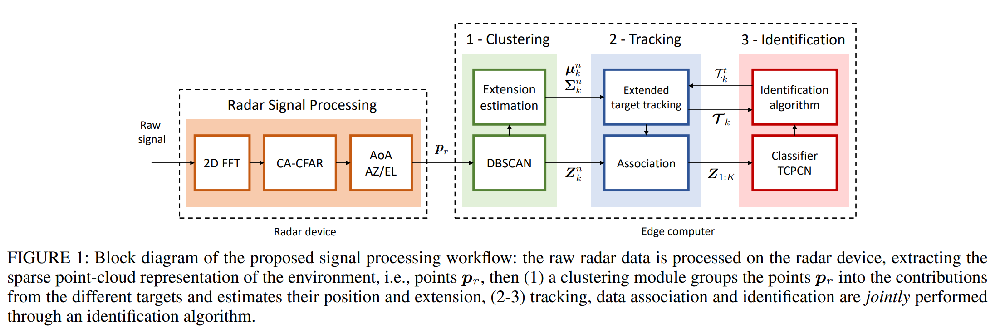
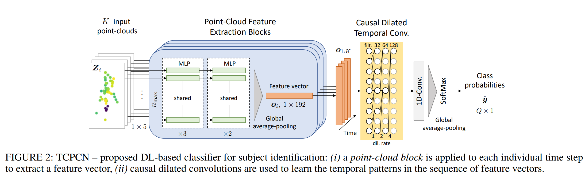
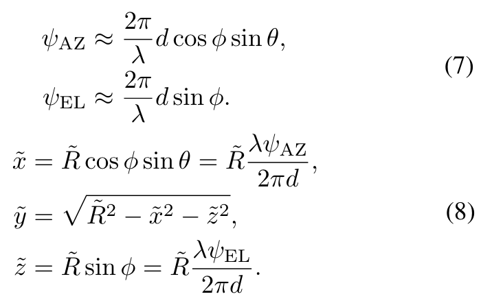
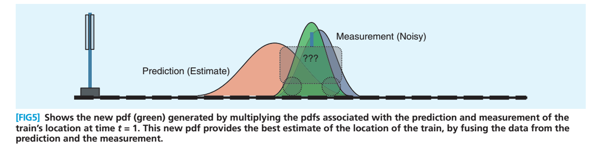

Point Cloud Clustering 聚类方法论文总结
基本操作
- 降噪
- 点云聚类（DBSCAN）
- 追踪（Tracking）
- ID（Identification）
Real-time People Tracking and Identification from Sparse mm-Wave Radar Point-clouds


Question
-
怎么做的tracking？
-
使用了converted-measurements Kalman filter (CM-KF) 方法预测目标人物位置、速度、Extension（？）。
-
用了NN-JPDA（nearest-neighbors joint probabilistic data association）算法计算轨迹。
The MTT association between new observations and trajectories is achieved using an approximation of the nearest-neighbors joint probabilistic data association (NN-JPDA) algorithm
-
Radar Part
※ 本文含有大量关于使用FMCW雷达采集和处理数据的细节，完全可以用作相关参考。
-
首先，雷达用的是MIMO雷达（multiple-input multiple-output)。
-
发射器3个，接收器4个，等效为一个发射器12个接收器。
-
发射信号被分布在两个空间走向上，分别是经(Azimuth, AZ)和纬(Elevation, EL)。两个方向上的信号以时分复用的方式交替发射，以取得两个方向上的角度，用以计算Point Cloud中每个点的空间位置。
-
分别是一个反射点在 AZ 和 EL 方向上的角度，R是反射点相对雷达的距离。xyz可以只靠来计算出来。

Points
-
本文中，并没有针对可变数量的人物进行适配。仅仅支持或3人或8人。所谓的ID只是一个N分类CNN罢了。
Identification: a deep NN classifier is applied to a temporal sequence of K subsequent point-clouds associated with each trajectory, with the objective of discerning among a set of Q pre-defined subject identities.
-
聚类还是DBSCAN方法。
Human tracking and identification through a millimeter wave radar
Questions
-
遮挡情况怎么办，多个人离得近有重合时候怎么办？
- 凉拌，论文避开了这个问题没说。
-
mmWave Radar的具体参数？
- 频段为77–81 GHz。
- Bandwidth是 4 GHz。
- The Chirp Cycle Time 𝑇𝑐 是 162.14 μs。
- Frequency Slope 是 70 GHz∕ms。
- Range resolution （距离分辨率）是 4.4 cm。
- Maximum unambiguous range （最大有效工作距离）是 5 m。
- 可分辨的最大径向速度是 2 m∕s。
- 速度分辨率是 0.26 m∕s。
- 128 chirps 每帧。
- 每秒33帧。
-
怎么做的human track？
- 这个过程是逐帧的。每当有新的人被检出，或是有被检出的人无法与之前帧的任何一个之前记录在案的人匹配成功，则添加一个新的track record
- 帧间目标匹配用的是匈牙利算法做的。
- 若有某个之前检出并记录过的人物在从某帧开始的连续D帧都没再出现过，则删除这个人。
- 最后，用Kalman Filter来预测和纠正轨迹。
-
Detection & Association 步骤中，匈牙利算法匹配已知人物和新一帧中的所有检出人物时，具体的匹配对象是什么（已知人物是一种什么形态被存贮记录的）？
-
无论是track record中记录的人还是新一帧检测出来的人，其实际representation形式都是在x和y方向上的位置和速度。
For each track we maintain a state which consists of location and velocity along the x and y axes. For each track the initial state consists of the first detection location and velocity.
-
-
Kalman Filter的具体作用？
-
降噪。纠正传感器噪声。
-
当目标物体有几帧缺失时，补全。
-
在本文中Kalman Filter是在track prediction部分使用的。它每次会结合过去对当前帧结果（）的预测和当前的实际CNN Output（）得到一个新的综合了二者的结果（），并以此为基础预测下一帧的结果（）。
-
具体可参考Kalman Filter 卡尔曼滤波，如下图，橙色是基于之前结果对小车当前相对距离的预测，紫色是对当前距离的观测，二者都有误差且服从正态分布，绿色则是综合了预测和观测的分布。

-
-
User Identification具体怎么做的？
-
首先让人失望的是，还是softmax+classification-based方法，还是fixed number of human。
-
然后具体的做法是：
- 先是正常的sliding windows聚合2s以内的所有点，步长为0.5s。
- 对于所有人，先使用一个大小相同的bbox圈起来这个人的所有点。
- 然后做Voxel Grid，有点像pooling操作，聚合成一个个空间块。
- Flatten这些voxel grid到一维，输入一个classifier（BiLSTM+MLP）过softmax出每个人的概率。
-
-
mmWave信号是如何转换成3D点云的？
- 首先FMCW雷达先记录所有的反射。
- 然后通过range-FFT之后移除clutter。
- 最后在估算完速度和角度之后生成point cloud。
-
怎么做到的区分未训练的闯入者和每个训练对象的？
- 在softmax loss分类，还加了一个center loss，旨在让来自同一个人的samples的intra-class distance最小，拥有相似的中心点，聚集在一起。
- 一旦来了新的人，他的sample feature中心点会远离前面的所有人，就会被区分开。
- 值得注意的是，这个所谓的相似的中心点并不是根据同一个人的features自然聚合训练出来的，而是通过对每个人类别label过一个embedding得到的。这个embedding会和每个该类的人的输出feature map做loss。
- 具体说道怎么根据这个embedding区分，那就是对每个人物bbox内得到的feature map，分别和每个已知人的bbox逐点算距离，距离太大就算闯入者，反之如果有一个还算小，那就是这类了。
Points
-
用的VICON Mocap System。
-
他们在论文中指出mmWave雷达很能穿，泡沫、塑料、木材、甚至铝对点云密度造成的影响都小于1%。
- 用的材料是统一的3mm厚大小的板子。约为1.5张A4纸大。
- 问题是，他们直接把材料怼到雷达脸上测的（1cm away from the sensor），为了防止radar signal transmitted in the line-of-sight condition。算是又避开了一个重要问题。估计在可视范围内放obstacles会出问题。
- 这种程度的穿透其实只在sensor有用，比如可以装配到屏幕、家具下面，而对应用端意义有限，即没法真的在日常空间中穿透物体。
-
Clustering用的是DBScan，参数
DBScan has two parameters, namely Eps which indicates the maximum distance of two points in the same cluster and MinPts which indicates the minimum point number in a cluster to cope with noise points. In practice, we choose 0.05 as Eps and 20 as MinPts. 𝛼 was set to 0.25 in the customized distance function.
About FMCW Radar
-
步骤：
- range-FFT: 用来算目标物体距离。
- Clutter Removal: 去掉静态物体。具体做法是对于每个range bin，对于每个天线，减去其均值。理由没看懂。(?)
As we are interested in identifying people moving in the scene, the background, corresponding to stationary objects, needs to be removed before performing Doppler FFT. This is performed by subtracting a mean for each range bin per antenna across the chirps in a frame. With this step in the processing pipeline, the millimeter wave radar is able to generate a point cloud which does not contain static obstacles. However, this does not guarantee that the point cloud does not contain noise. While the users move in the scene, parts of the background objects are occluded and the reflections from these areas changes over time, leading to noise in the radar point cloud.
-
Doppler-FFT: 用来算目标物体速度。这一步前必须先把静态物体移除到位。
-
Angle Estimation：用天线组合来算目标物体相对雷达角度。
-
很好奇究竟是如何从距离速度和角度还原出来如此高精度的3D空间坐标信息的。(?)
Improvable Points
- 首先，这是针对特定人群的训练。无法泛化，训练集里面有谁谁才能用。
- 其次，他们算center loss时候只考虑了类内区别最小，没考虑让类间不同最大。
- 没有考虑人们距离太近时候的点云重合混杂问题，避而不谈。